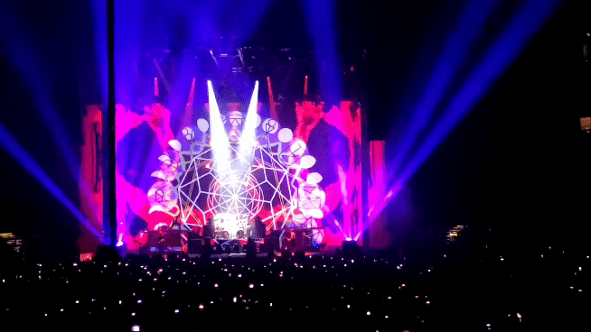

TOOL
So crucify the ego, before it's far too late.
Inscreva-se
Conheça uma das bandas de metal progressivo mais influentes das últimas décadas
Fundada em Los Angeles em 1990, o TOOL é uma das forças mais singulares e influentes do rock e metal progressivo moderno. Liderada pela voz enigmática de Maynard James Keenan, ao lado do guitarrista Adam Jones, do baixista Justin Chancellor e do baterista Danny Carey, a banda transcendeu o formato tradicional do rock pesado ao fundir riffs agressivos com estruturas matemáticas complexas, compassos rítmicos incomuns e uma profunda aura espiritual e filosófica.
Mais do que músicos, o TOOL opera como um coletivo artístico multimídia. Seus shows são experiências visuais imersivas e seus videoclipes em stop-motion, concebidos por Adam Jones, tornaram-se marcos da cultura visual dos anos 1990 e 2000. Lançando álbuns raros, porém aclamados pela crítica e pelo público — como os clássicos Ænima (1996) e Lateralus (2001) —, o grupo conquistou quatro prêmios Grammy e uma base de fãs devota com o status de culto, provando que composições longas, enigmáticas e desafiadoras podem sim alcançar o topo das paradas mundiais.

Para conhecer mais sobre a banda TOOL clique no botão abaixo
ver história
This body holding me reminds me of my own mortality. Embrace this moment. Remember: we are eternal, all this pain is an illusion.
Compilado da turnê 10,000 Days 2006

A turnê de 10,000 Days elevou os shows do TOOL ao status de experiência sensorial definitiva. Mais do que promover o álbum de 2006, as apresentações funcionavam como um verdadeiro ritual imersivo, engolindo o público com projeções psicodélicas, lasers e uma atmosfera visual avassaladora.
No palco, a banda exibia uma precisão cirúrgica impecável, transformando novos clássicos como "Vicarious" e "The Pot" em momentos catárticos. Foi a turnê que consolidou o TOOL como uma potência ao vivo insuperável, capaz de criar um espetáculo sonoro e visual que nenhuma outra banda no planeta consegue replicar.